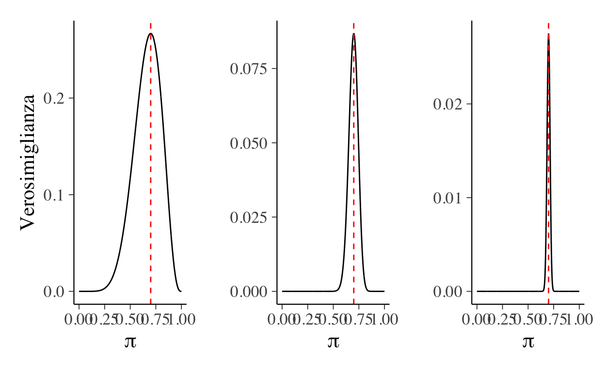

L’approccio frequentista è basato sull’idea di probabilità quale frequenza relativa. Tale approccio immagina che un determinato esperimento casuale venga ripetuto infinite volte e si chiede come si distribuiscono i risultati ottenuti. Consideriamo qui, quale esempio, l’esperimento casuale che corrisponde all’estrazione casuale di un campione di \(n\) osservazioni da una popolazione e del calcolo della media di quel campione. Dato che si immagina che l’esperimento casuale venga ripetuto infinite volte, dobbiamo immaginare l’esistenza di infiniti campioni casuali di \(n\) osservazioni. Dato che ciascuno di tali campioni è costituito da osservazioni diverse, ognuno di essi avrà una media diversa. Tale fenomeno è detto variabilità campionaria. Se usiamo il linguaggio dell’approccio frequentista diremo che la distribuzione dei tutti gli infiniti possibili valori della statistica in questione (nel caso dell’esempio, la media del campione) nell’universo dei campioni si chiama .
Se lo psicologo usa la media del campione quale stima della media della popolazione, ovviamente commetterà un errore, dato che la statistica campionaria è sempre diversa dal parametro. Il problema dello psicologo è quello di valutare l’entità di tale errore, ovvero quello di valutare il livello di incertezza inerente alla sua stima.
Per valutare l’incertezza della stima lo psicologo fa riferimento alla variabilità campionaria. Se la deviazione standard della distribuzione campionaria della statistica è piccola, questo significa che ogni campione casuale di ampiezza \(n\) produrrà una statistica \(\bar{X}\) simile al parametro \(\mu\) della popolazione. In tali condizioni (utilizzando i dati di un singolo campione) ci sarà una piccola incertezza relativamente al valore del parametro, perché, in media, \(\bar{X}\) è simile a \(\mu\). Se invece la deviazione standard della distribuzione campionaria di \(\bar{X}\) è grande, i campioni casuali di ampiezza \(n\) produrranno, in media, una statistica \(\bar{X}\) molto lontana dal parametro \(\mu\). Utilizzando i dati di un singolo campione, in tali condizioni lo psicologo sarà molto incerto relativamente al vero valore del parametro (in quanto, in media, \(\bar{X}\) è molto diverso da \(\mu\)).
La deviazione standard della distribuzione campionaria, detta errore standard, viene dunque utilizzata per quantificare l’incertezza relativamente alla stima di un parametro. Solitamente, l’approccio frequentista quantifica l’incertezza della stima nei termini di una funzione dell’errore standard chiamata intervallo fiduciale. Lo scopo di questo capitolo è quello di introdurre la nozione di errore standard in modo tale da potere fornire un’interpretazione alla nozione di intervallo fiduciale.
L’errore standard
Iniziamo con un esempio e chiediamoci: com’è possibile misurare la variabilità della proporzione di studenti promossi, se prendiamo in considerazione tutti i possibili appelli d’esame di Psicometria a Firenze (quelli passati, quelli presenti e anche quelli futuri)? Sappiamo che la statistica più utile per quantificare la variabilità di una variabile è la deviazione standard. Questo fatto fornisce la risposta anche alla domanda che ci siamo posti ora: in linea di principio, potremmo usare la deviazione standard per descrivere di quanto variano, in media, i valori delle proporzioni di studenti promossi in tutti i possibili appelli d’esame di Psicometria a Firenze. Un problema che dobbiamo affrontare, però, riguarda il fatto che la distribuzione di valori a cui facciamo riferimento è una distribuzione di valori virtuali, non è un insieme di dati che abbiamo osservato. Per calcolare la deviazione standard, dunque, dobbiamo procedere in modo diverso da quanto abbiamo fatto in precedenza. Iniziamo con un po’ di terminologia. La stima della deviazione standard della distribuzione di una statistica campionaria (nell’esempio disciusso, la proporzione) viene detta errore standard. Queste considerazioni ci conducono alla seguente definizione.
Si dice la deviazione standard dei valori una statistica campionaria nell’universo dei campioni.
Il calcolo dell’errore standard è solitamente lasciato ad un software.
L’errore standard è molto importante perché descrive l’accuratezza della nostra stima. Se l’errore standard è piccolo questo ci dice che, se osserviamo un campione diverso da quello corrente, allora ci aspettiamo che la statistica in esame abbia un valore simile a quello corrente. Un grande errore standard, invece, ci dice che non dobbiamo assegnare troppa fiducia alla stima ottenuta nel campione a disposizione perché, in un altro campione, si otterrà una stima molto diversa, e, in media, i valori ottenuti in campioni diversi saranno lontani dal vero valore del parametro sconosciuto (ovvero, nell’esempio considerato, dalla media di tutte le proporzioni che si possono ottenere).
Il calcolo dell’errore standard è solitamente lasciato ad un software. Ma come si arriva ad una quantificazione dell’errore standard? Forniamo qui solo una descrizione intuitiva della procedura che viene seguita e forniamo la seguente definizione.
L’errore standard può essere inteso come una misura (del reciproco) della curvatura della verosimiglianza in corrispondenza della stima di massima verosimiglianza per un parametro \(\theta\).
La prima delle due definizioni precedente descrive la logica soggiacente alla procedura di calcolo dell’errore standard, mentre la seconda definizione ci dice qual è il significato dell’errore standard.
Per capire come si traduce in pratica la definizione precedente, esaminiamo la figura~. Nel pannello di sinistra è riprodotta la funzione di verosimiglianza nel caso di 7 successi in 10 prove Bernoulliane. Nel pannello centrale è riportata la verosimiglianza per 70 successi in 100 prove e nel pannello di destra abbiamo la verosimiglianza nel caso di 700 successi in prove. Quello che la figura~ ci dice è che, al crescere del numero di prove, diminuisce la nostra incertezza relativamente al valore del parametro \(\pi\) (probabilità di successo, ovvero, la media di tutte le proporzioni campionarie). Nel caso di un piccolo numero di prove, la verosimiglianza ha una piccola curvatura e ci fornisce una modesta quantità di informazione concernente il parametro non osservabile \(\pi\) – in altri termini, la verosimiglianza definisce un intervallo piuttosto ampio di valori \(\pi\) la cui plausibilità relativa è piuttosto grande. Con un grande numero di prove, invece, la verosimiglianza ha un molto più marcato che associa livelli relativamente alti di plausibilità ad un intervallo molto più piccolo di valori \(\pi\). In altre parole, maggiore è la curvatura della verosimiglianza, maggiore è la quantità di informazione che il campione fornisce rispetto al valore del parametro sconosciuto che vogliamo stimare.
Ad esempio, esaminiamo qui sotto la funzione di verosimiglianza nel caso di 7 successi in 10 prove Bernoulliane (pannello di sinistra), di 70 successi in 100 prove (pannello centrale) e di 700 successi in 1000 prove (pannello di destra).
library("tidyverse")
suppressPackageStartupMessages(library("bayesplot"))
theme_set(bayesplot::theme_default(base_size=16))
suppressPackageStartupMessages(library("patchwork"))
library("ggExtra")
log_likelihood <- function(x, mu, sigma = true_sigma) {
sum(dnorm(x, mu, sigma, log = TRUE))
}
p <- seq(0, 1, length.out = 1e3)
like <- dbinom(7, 10, p)
p1 <- ggplot(
data.frame(p, like),
aes(x = p, y = like)
) +
geom_line() +
vline_at(0.7, color = "red", linetype="dashed") +
labs(
y = "Verosimiglianza",
x = c("\u03C0")
)
like <- dbinom(70, 100, p)
p2 <- ggplot(
data.frame(p, like),
aes(x = p, y = like)
) +
geom_line() +
vline_at(0.7, color = "red", linetype="dashed") +
labs(
y = "",
x = c("\u03C0")
)
like <- dbinom(700, 1000, p)
p3 <- ggplot(
data.frame(p, like),
aes(x = p, y = like)
) +
geom_line() +
vline_at(0.7, color = "red", linetype="dashed") +
labs(
y = "",
x = c("\u03C0")
)
p1 + p2 + p3

In termini formali, la curvatura è la derivata seconda di una funzione e, appunto, calcolando la derivata seconda della funzione di verosimiglianza possiamo trovare l’errore standard di una statistica. Nel caso presente, l’errore standard della proporzione campionaria è
\[ \sigma_{\hat{\pi}} = \sqrt{ \frac{p (1-p)}{n}, } \]
dove \(p\) è la proporzione campionaria e \(n\) è il numero di osservazioni. Questa quantità si interpreta come qualunque deviazione standard: nello specifico, ci dice quanto varia in media la proporzione campionari se consideriamo campioni diversi. Si noti che, avendo \(n\) al denominatore, la formula riproduce l’intuizione che abbiamo descritto mediante la figura precedente: quando \(n\) è grande l’errore standard è piccolo e, viceversa, quando \(n\) è piccolo l’errore standard è grande. In altri termini, quando l’errore standard di una stima è piccolo, possiamo attribuire un grande livello di fiducia al valore della stima del parametro. Invece, un grande errore standard ci suggerisce ad essere cauti in qualunque inferenza che potremmo trarre dalla stima che abbiamo ottenuto.
Intervallo di fiducia per la media
I casi più frequenti nelle indagini svolte nell’ambito della psicologia riguardano i test relativi ad una singola media oppure al confronto tra le medie di due campioni. Iniziamo con il caso di una singola media.
Popolazione con varianza nota
Sia \(X_1,X_2\dots,X_n\) un campione casuale estratto da una popolazione di legge normale di media \(\mu\) e varianza \(\sigma^2\). La media campionaria, essendo una combinazione lineare di \(n\) variabili aleatorie normali, è anch’essa una variabile normale (si veda la ~): \(\bar{X} \sim \mathcal{N}(\mu, \sigma/n)\). La media campionaria standardizzata
\[ \begin{equation} \frac{\bar{X} - \mu}{\sigma} \sqrt{n}\sim \mathcal{N}(0, 1)\notag \end{equation} \]
segue dunque una distribuzione normale con media zero e deviazione standard unitaria.
Fissato il livello fiduciario \(\gamma = 1 - \alpha\) (tipicamente 0.95, corrispondente a \(\alpha = 0.05\)), indichiamo con \(z\) il quantile di ordine \(1 - \alpha/2\) della distribuzione normale standard in modo che
\[ \begin{equation} P(-z \leq Z \leq z) = 1 - \alpha.\notag \end{equation} \]
Otteniamo dunque
\[ \begin{equation} P\bigg(-z \leq \frac{\bar{X} - \mu}{\sigma} \sqrt{n} \leq z\bigg) = 1 - \alpha.\notag \end{equation} \]
Applicando qualche manipolazione algebrica, la diseguaglianza precedente si può scrivere nel modo seguente:
\[ \begin{align} P\bigg(-z {\frac{\sigma}{\sqrt{n}}} \leq \bar{X} - \mu \leq z \frac{\sigma}{\sqrt{n}}\bigg) &= 1 - \alpha\notag\\ P\bigg(-\bar{X}-z {\frac{\sigma}{\sqrt{n}}} \leq -\mu \leq -\bar{X} + z \frac{\sigma}{\sqrt{n}}\bigg) &= 1 - \alpha\notag\\ P\bigg(\bar{X}+z \frac{\sigma}{\sqrt{n}} \geq \mu \geq \bar{X} -z \frac{\sigma}{\sqrt{n}}\bigg) &= 1 - \alpha.\notag \end{align} \]
Se definiamo
\[ \begin{equation} \hat{a} \triangleq \bar{X}-z \frac{\sigma}{\sqrt{n}}, \quad \hat{b} \triangleq \bar{X} +z \frac{\sigma}{\sqrt{n}}, \end{equation} \]
avremo che
\[ \begin{equation} P(\hat{a} \leq \mu \leq \hat{b}) = 1 - \alpha.\notag \end{equation} \]
L’intervallo \([\hat{a}, \hat{b}]\) è detto intervallo di fiducia per una stima della media della popolazione al livello fiduciario \(\gamma = 1 -\alpha\).
Popolazione con varianza incognita
In ogni applicazione concreta, lo sperimentatore estrae un solo campione \(x_1, \dots, x_n\) dalla popolazione e la varianza \(\sigma^2\), in aggiunta alla media \(\mu\) da determinare, è sconosciuta. In tal caso, per effettuare una stima intervallare di \(\mu\) ci si basa sulla densità \(t\) di Student. In base ad un Teorema che riguarda la distribuzione \(t\), possiamo scrivere
\[ \begin{equation} P\bigg(-t^{\ast} \leq \frac{\bar{X} - \mu}{s} \sqrt{n} \leq t^{\ast}\bigg) = 1 -\alpha, \end{equation} \]
dove \(s\) è lo stimatore non distorto di \(\sigma\) e \(t^{\ast} \triangleq t_{n-1,1-\alpha/2}\) è il quantile di ordine \(1 - \alpha/2\) della distribuzione \(t_{n-1}\). Pertanto, il limite inferiore \(\hat{a}\) e il limite superiore \(\hat{b}\) dell’intervallo di fiducia diventano, rispettivamente, uguali a:
\[ \begin{equation} \hat{a} \triangleq \bar{X} -t^{\ast} \frac{s}{\sqrt{n}}, \quad \hat{b} \triangleq \bar{X} + t^{\ast} \frac{s}{\sqrt{n}}. \end{equation} \]
Si noti che, nel caso di una popolazione con varianza incognita, i limiti fiduciari si ottengono dall’equazione~ sostituendo \(\sigma\), ora incognito, con \(s\) (per una ampiezza campionaria \(n\) qualsiasi), e il coefficiente \(z\) con \(t_{n-1,1-\alpha/2}\).
Esempio. Murray, Murphy, von Hippel, Trivers, e Haselton (2017) si pongono il problema dei bias di giudizio che l’evoluzione potrebbe avere imposto sul funzionamento del sistema cognitivo. In particolare, esaminano l’ipotesi secondo la quale i maschi tendono a sovrastimare l’interesse sessuale delle donne (Haselton & Buss, 2000) perché per la loro inclusive fitness è meno costoso inferire un interesse sessuale assente che non notare un interesse sessuale presente.
Ai partecipanti del loro esperimento veniva chiesto di stimare che cosa una donna direbbe (say question) rispetto alle sue intenzioni sessuali (cioè, sulla propria intenzione di avere un rapporto sessuale con un uomo) e quali potrebbero essere le sue vere intenzioni sessuali (want question) quando essa è coinvolta in vari comportamenti romantici con un uomo (es., tenersi per mano).
Senza entrare nei dettagli, in una condizione sperimentale, gli autori si aspettano di non trovare differenze tra le condizioni say e want. Riportiamo qui i calcoli per l’intervallo di fiducia sulla differenza tra le stime fornite dai 207 partecipanti alle domande relative alle condizioni say e want.
I dati sono appaiati e dunque calcoliamo la differenza tra le due condizioni, per ogni partecipante (i dati sono disponibili al seguente indirizzo: ). La media delle differenze è \(\bar{X}\) = 0.063, con una deviazione standard pari a 1.338. L’intervallo di fiducia del 95% risulta dunque essere uguale a
\[ \bar{X} \pm t_{.975, 206} \frac{s}{\sqrt{n}} = 0.063 \pm 1.971 \frac{1.338}{\sqrt{207}} = [-0.12, 0.25], \]
come riportato dagli autori.
Dato che l’intervallo di confidenza include lo zero, si è soliti concludere che i dati non forniscono evidenze che la statistica in questione (la differenza tra le medie dei campioni) sia diversa da zero – ovvero, nel caso presente, che non vi è una differenza tra le condizioni say e want.
Ampiezza campionaria e distribuzione della popolazione
La formula dell’intervallo di fiducia è stata ricavata nell’ipotesi che la popolazione sia normalmente distribuita e vale anche per piccoli campioni (\(n < 30\)) estratti casualmente da questa. Per una popolazione con distribuzione diversa da quella normale, invece, le stime intervallari per la media della popolazione si possono ancora ottenere se la numerosità del campione è sufficientemente elevata (\(n \geq 30\)), calcolando i coefficienti fiduciari \(z_{\gamma}\) che compaiono nelle formule precedenti, dopo aver sostituito in queste formule la deviazione standard incognita \(\sigma\) con il valore empirico della statistica campionaria \(s\).
In alcuni casi, la distribuzione delle statistiche campionarie approssima la Normale e, in tali casi, l’intervallo fiduciale al 95% è dato da
\[ \begin{equation} \hat{\theta} \pm 1.96 \cdot \text{SE}, \notag \end{equation} \]
ovvero, dalla stima del parametro \(\pm\) 1.96 volte l’errore standard.
Conoscendo l’errore standard, è dunque molto semplice calcolare l’intervallo fiduciale. Meno semplice, invece, è interpretare l’intervallo fiduciale nel modo corretto. Per capire quale sia l’interpretazione corretta dell’intervallo fiduciale, iniziamo a definire il concetto di livello di copertura.
Il livello di copertura
Si indica con \(1-\alpha\) il livello di copertura fornito dall’intervallo fiduciale. Il termine probabilità di copertura si riferisce alla probabilità che la procedura per la costruzione degli intervalli di fiducia produca un intervallo che contiene (o copre) il valore reale del parametro di interesse. Esiste infatti sempre una probabilità pari ad \(\alpha\) che i dati campionari producano un intervallo che non contiene il valore reale del parametro di interesse.
Ricordiamo che l’approccio frequentista interpreta la probabilità di un evento come la proporzione di volte in cui tale evento si verifica avendo osservato molte ripetizioni indipendenti di un esperimento casuale. Nel caso presente, l’evento in questione è la risposta alla domanda l’intervallo fiduciale contiene il valore del parametro? mentre l’esperimento casuale corrisponde al calcolo dell’intervallo fiduciale per la statistica in question in un campione casuale di ampiezza \(n\). L’interpretazione frequentista della nozione di livello di copertura può essere chiarita mediante la seguente simulazione.
Prendiamo in considerazione la distribuzione dell’altezza degli adulti maschi nella popolazione. Sappiamo che l’altezza degli individui segue la distribuzione normale. Sappiamo inoltre che, per esempio, l’altezza media di un italiano adulto maschio è di \(175\) cm, con una varianza di \(49\) cm\(^2\). Utilizziamo queste informazioni per realizzare la seguente simulazione in R. Nella simulazione prevediamo 100 ripetizioni dell’esperimento casuale che consiste nell’estrazione di un campione di ampiezza \(n = 20\) dalla popolazione distribuita come \(\mathcal{N}(175, 7)\). Per ciascun campione casuale così trovato utilizzeremo poi la funzione t.test() per calcolare l’intervallo fiduciale al 95%. Salveremo quindi nella matrice sampling_distribution il limite inferiore e il limite superiore dell’intervallo fiduciale trovato in ciascuno dei 100 campioni.
library("tidyverse")
library("scales")
set.seed(1235)
nrep <- 100
sampling_distribution <- matrix(NA, nrow = nrep, ncol = 2)
point_estimate <- rep(NA, nrep)
sample_size <- 20
mu <- 175
sigma <- 7
for (i in 1:nrep) {
y <- rnorm(sample_size, mu, sigma)
temp <- t.test(y, conf.level = 0.95)
sampling_distribution[i, ] <- temp$conf.int
point_estimate[i] <- temp$estimate
}
Creiamo poi un data.frame a cui aggiungiamo una colonna che riporta i valori delle medie campionarie.
colnames(sampling_distribution) <- c("lcl", "ucl")
sampling_distribution <-
as.data.frame(sampling_distribution)
sampling_distribution$mean <- as.numeric(point_estimate)
sampling_distribution$replicate <- 1:nrep
sampling_distribution$captured <- factor(ifelse(
sampling_distribution$lcl <= mu & sampling_distribution$ucl >= mu,
1, 0
))
levels(sampling_distribution$captured) <- c('No', 'Si')
Utilizzando ggplot() creiamo una figura che riporta i 100 intervalli fiduciali al 95% che abbiamo ottenuto, uno per ciascuno dei 100 diversi campioni casuali estratti dalla distribuzione delle altezze.
p <- ggplot(sampling_distribution) +
geom_point(
aes(
x = point_estimate, y = replicate, color = captured)
) +
geom_segment(aes(
y = replicate, yend = replicate, x = lcl, xend = ucl,
color = captured
)) +
geom_vline(
xintercept = 175, linetype = 2, color = "white"
) +
labs(
x = "Stima puntuale",
y = "Campioni simulati"
) +
guides(color=guide_legend("Parametro contenuto nell'intervallo"))
p + papaja::theme_apa() +
theme(legend.position = "bottom")

La figura precedente riporta i 100 intervalli fiduciali del 95% calcolati nella simulazione descritta sopra e distingue tra intervalli fiduciali che contengono il valore del parametro e intervalli che non lo contengono. Se ripetiamo la simulazione \(\num{10000}\) volte troviamo un livello di copertura (ovvero, una proporzione di intervalli fiduciali del 95% che contengono il parametro) pari a 0.9468. Questo valore è molto prossimo al livello nominale \(1 - \alpha = 0.95\).
Intervallo di fiducia per la differenza di due medie
Si considerino due popolazioni distribuite normalmente e aventi la stessa varianza. Le due popolazioni sono dunque distribuite come due variabili aleatorie indipendenti \(X \sim \mathcal{N}(\mu_1, \sigma^2)\), \(Y \sim \mathcal{N}(\mu_2, \sigma^2)\). Ci poniamo il problema di stimare la differenza \(\mu_1 - \mu_2\) fra le medie delle due popolazioni.
Estraiamo un campione casuale da ciascuna popolazione. Siano
\[ \begin{equation} X_1,\dots,X_{n_1} \sim \mathcal{N}(\mu_1,\sigma_1), \quad Y_1,\dots,Y_{n_2} \sim \mathcal{N}(\mu_2,\sigma_2),\notag \end{equation} \] due variabili aleatorie indipendenti e siano
\[ \begin{equation} \bar{X} = \frac{1}{n_1}\sum_{i=1}^{n_1}X_i, \quad s_1^2 = \frac{1}{n_1-1}\sum_{i=1}^{n_1}(X_i-\bar{X})^2,\notag \end{equation} \] \[ \begin{equation} \bar{Y} = \frac{1}{n_2}\sum_{i=1}^{n_2}Y_i, \quad s_2^2 = \frac{1}{n_2-1}\sum_{i=1}^{n_2}(Y_i-\bar{Y})^2,\notag \end{equation} \]
le relative medie (\(\bar{X}, \bar{Y}\)) e varianze (\(s_1^2, s_2^2\)) campionarie. La varianza \(\sigma^2\), comune a entrambe le popolazioni, può essere stimata utilizzando congiuntamente entrambi i campioni. Infatti, può essere dimostrato che la variabile aleatoria
\[ \begin{equation} s_p^2 \triangleq \frac{(n_1-1)s_1^2 + (n_2-1)s_2^2}{n_1+n_2 -2}, \end{equation} \]
detta stima combinata della varianza è uno stimatore corretto di \(\sigma^2\). Può essere inoltre dimostrato che la variabile aleatoria
\[ \begin{equation} T_n = \frac{(\bar{X} - \bar{Y}) - (\mu_1-\mu_2)}{\sqrt{s_p^2 \big(\frac{1}{n_1} + \frac{1}{n_2}\big) }} \end{equation} \]
si distribuisce come una variabile \(t\)-Student con \(\nu = n_1 + n_2 -2\) gradi di libertà.
Seguendo la procedura descritta nella sezione precedente, possiamo dunque concludere che l’intervallo di fiducia al livello di \(\gamma = 1 -\alpha\) per la differenza tra le medie \(\mu_1 - \mu_2\) è dato da
\[ \begin{equation} (\bar{X} -\bar{Y}) - t^{\ast} \cdot s_p \sqrt{\frac{1}{n_1} + \frac{1}{n_2}} < \mu_1 - \mu_2 < (\bar{X} - \bar{Y}) + t^{\ast} \cdot s_p \sqrt{\frac{1}{n_1} + \frac{1}{n_2}}, \end{equation} \]
dove \(t^{\ast} = t_{\nu, 1-\alpha/2}\) è il quantile di ordine \(1- \alpha/2\) della distribuzione \(t\)-Student con \(\nu = n_1 + n_2 - 2\) gradi di libertà.
Dimostrazione. È facile trovare il valore atteso e la varianza (si veda il denominatore dell’equazione ) della differenza fra due medie campionarie. Siano \(X_1,\dots,X_{n_1}\) e \(Y_1,\dots,Y_{n_2}\) due variabili aleatorie indipendenti tali che \(\mathbb{E}(X) = \mu_X\) e \(var(X) = \sigma^2\); inoltre, \(\mathbb{E}(Y) = \mu_Y\) e \(var(Y) = \sigma^2\). Consideriamo qui il caso in cui entrambe le variabili aleatorie \(X\) e \(Y\) hanno la stessa varianza \(\sigma^2\). Il valore atteso della differenza tra le medie \(\bar{X} - \bar{Y}\) per campioni di ampiezza \(n_X\) e \(n_Y\) è
\[ \begin{equation} \mathbb{E}(\bar{X}-\bar{Y}) = \mathbb{E}(\bar{X})-\mathbb{E}(\bar{Y}) = \mu_X -\mu_Y. \end{equation} \]
Nell’ipotesi che \(X\) e \(Y\) siano indipendenti, la varianza della differenza delle medie \(\bar{X} - \bar{Y}\) per campioni di ampiezza \(n_X\) e \(n_Y\) è
\[ \begin{align} var(\bar{X}-\bar{Y}) &= var(\bar{X}) + var(\bar{Y})- 2 cov(\bar{X},\bar{Y}) \notag\\ &= var(\bar{X}) + var(\bar{Y}) \notag\\ &= \frac{\sigma^2}{n_X} + \frac{\sigma^2}{n_Y} \notag\\ &= \sigma^2 \Big(\frac{1}{n_X} + \frac{1}{n_Y} \Big). \end{align} \]
Interpretazione
Studenti e ricercatori tendono ad interpretare gli intervalli fiduciali dicendo che “c’è una probabilità del 95% che la vera media della popolazione si trovi all’interno dell’intervallo fiduciale”. Questa è un’interpretazione semplice e cattura l’idea del senso comune secondo la quale una probabilità di 0.95 significa: “sono sicuro al 95%”. Sfortunatamente, l’interpretazione precedente è sbagliata. La precedente interpretazione richiede che la probabilità venga descritta in termini soggettivi e corrisponde a dire: sono fiducioso al 95% che l’intervallo così costruito contenga la media della popolazione, perché questa è la mia opinione. Nella vita di tutti i giorni un tale punto di vista va benissimo, ma parlare di opinioni soggettive e di fiducia è un’idea Bayesiana. Non c’è niente di male con l’idea che la nozione probabilità del 95% possa riferirsi a un’opinione personale. Tuttavia, gli intervalli fiduciali sono una procedura statistica di stampo frequentista, non Bayesiano. Se usiamo degli strumenti statistici frequentisti per costruire l’intervallo fiduciale non possiamo attribuire ad esso un’interpretazione Bayesiana, ma dobbiamo interpretare tale intervallo di valori in maniera coerente con l’impianto teorico frequentista – anche perché gli intervalli di fiducia frequentisti e gli intervalli di credibilità Bayesiani sono numericamente diversi!
Se l’interpretazione presentata sopra non è corretta, allora qual è l’interpretazione corretta dell’intervallo fiduciale? Dobbiamo ricordare ciò che abbiamo detto sulla probabilità frequentista: in base all’approccio frequentista la probabilità di un evento è alla proporzione di volte con la quale un evento si è verificato in una sequenza di esperimenti casuali. È necessario ripetere tante volte un esperimento casuale, anche solo in maniera ipotetica (come nella simulazione descritta sopra), altrimenti non è possibile parlare di probabilità. L’interpretazione frequentista di un intervallo fiduciale deve avere a che fare con la ripetizione di un esperimento casuale e può essere formulata nel modo seguente.
Se ripetessimo tante volte l’esperimento casuale che consiste nell’estrarre un campione casuale dalla popolazione e nel calcolare l’intervallo fiduciale al 95%, allora nel 95% dei casi gli intervalli così calcolati conterrebbero il vero valore del parametro.
Più in generale, se si estraggono successivamente più campioni indipendenti dalla stessa popolazione e se si determinano i relativi intervalli fiduciali seguendo la procedura indicata dalla statistica frequentista, allora il \(100 (1-\alpha)\)% degli intervalli così calcolati conterrà il vero valore del parametro incognito.
Questa idea è illustrata nella figura che riporta i risultati della simulazione sul livello di copertura, la quale mostra 100 intervalli fiduciali costruiti per stimare l’altezza media di un italiano adulto maschio sulla base di campioni casuali di ampiezza \(n = 30\). Alcuni di questi intervalli fiduciali contengono il valore del parametro, altri non lo contengono. Se la simulazione venisse ripetuta infinite volte si scoprirebbe che esattamente il 95% degli intervalli così calcolati conterrebbe il valore del parametro (e il 5% non lo conterrebbe), dato che, per costruire gli intervalli fiduciali abbiamo usato \(\alpha = 0.05\).
Questa è l’interpretazione corretta che deve essere attribuita alla nozione di intervallo fiduciale al livello \(100 (1-\alpha)\)%. È però risaputo come i ricercatori (non solo gli studenti!) spesso attribuiscono agli intervalli fiduciali un’interpretazione errata, come abbiamo descritto sopra. Non poche volte nelle riviste specialistiche si leggono affermazioni del tipo: la probabilità che la media della popolazione \(\mu\) sia contenuta nell’intervallo \([\hat{a}, \hat{b}]\) è 0.95, mentre in realtà si dovrebbe scrivere: la procedura tramite la quale l’intervallo \([\hat{a}, \hat{b}]\) è stato calcolato include \(\mu\) nel 95% dei casi.
In conclusione, la simulazione appena eseguita ci suggerisce quanto segue. Calcolare un intervallo di fiducia al 95% significa utilizzare una procedura che, per ciascun campione, ci consente di trovare due valori: il limite inferiore e il limite superiore dell’intervallo fiduciario. Se consideriamo un numero molto grande di intervalli di fiducia calcolati in questo modo, la proporzione di intervalli che effettivamente contengono il vero valore della media della popolazione sarà uguale a 0.95. Questo è il significato di intervallo di fiducia al 95%.
La differenza fondamentale è che le affermazioni di tipo bayesiano sono delle affermazioni probabilistiche sulla media della popolazione (cioè, descrivono nostra incertezza relativamente al valore della media della popolazione), mentre affermazioni di questo tipo non sono consentite nell’interpretazione frequentista della probabilità. Nell’interpretazione frequentista, la media della popolazione è fissa e nessuna interpretazione ‘probabilistica’ è sensata a questo proposito.
Gli estremi dell’intervallo di fiducia, invece, sono delle quantità aleatorie che dipendono da un esperimento casuale: ogni volta che osserviamo un nuovo campione il limite inferiore e il limite superiore dell’intervallo di fiducia assumeranno valori diversi. Pertanto è sensato pensare che la procedura di costruzione dell’intervallo di fiducia possa essere ripetuta. È in riferimento a tali ripetizioni che l’approccio frequentista assegna una probabilità agli intervalli di fiducia: la probabilità è la frequenza relativa (in queste infinite ripetizioni) che un certo evento si verifica (dove l’evento è ovviamente il fatto che l’intervallo include il valore del parametro). Pertanto, dal punto di vista frequentista, è lecito parlare della probabilità che l’intervallo di fiducia (una variabile aleatoria) contenga il parametro; non è invece lecito dire alcunché sulla probabilità che il parametro (un evento non ripetibile) sia compreso nell’intervallo di fiducia.
Questa non è solo una differenza ‘semantica’. Come ho accennato sopra, le procedure di calcolo per gli intervalli di fiducia frequentisti sono diverse dalle procedure di calcolo per gli intervalli di credibilità bayesiani. %In maniera corrispondente, nei due casi anche le interpretazioni sono diverse – e dobbiamo scegliere quella giusta! %Un altro modo per descrivere questa situazione è quello di dire che ciò che vorremmo conoscere è \(P(\theta \mid \text{dati})\), mentre in realtà quello che l’approccio frequentista ci fornisce è \(P(\text{dati} \mid \theta)\). %Se vengono utilizzati i metodi della statistica bayesiana è invece possibile costruire un che corrisponde a \(P(\theta \mid \text{dati})\).
Fraintendimenti
Hoekstra, Morey, Rouder e Wagenmakers (2014) notano che, essendo ampiamente riconosciuti i limiti del test dell’ipotesi nulla, per l’inferenza statistica viene spesso consigliato l’utilizzo degli intervalli di fiducia. Per esempio, l’American Psychological Association Publication Manual fa riferimento agli intervalli di fiducia affermando che essi rappresentano “in general, the best reporting strategy” (APA, 2001, p. 22; APA, 2009, p. 34). Hoekstra et al. (2014) fanno notare, però, che tali raccomdandazioni hanno dei limiti, in quanto non tengono in considerazione la difficoltà che hanno i ricercatori a fornire agli intervalli di fiducia l’interpretazione corretta. A sostegno di questo punto di vista, Hoekstra et al. (2014) hanno svolto uno studio nel quale si sono posti due domande:
- in che misura gli intervalli di fiducia vengono interpretati in maniera sbagliata da studenti e ricercatori?
- le interpretazioni errate degli intervalli di fiducia diminuiscono con l’esperienza nell’ambito della ricerca?
Prima di presentare lo studio, Hoekstra et al. ricordano quale sia l’interpretazione corretta degli intervalli di fiducia. Il lettore può mettere in relazione la seguente citazione con ciò che è stato discusso in precedenza.
A CI is a numerical interval constructed around the estimate of a parameter. Such an interval does not, however, directly indicate a property of the parameter; instead, it indicates a property of the procedure, as is typical for a frequentist technique. Specifically, we may find that a particular procedure, when used repeatedly across a series of hypothetical data sets (i.e., the sample space), yields intervals that contain the true parameter value in 95% of the cases. When such a procedure is applied to a particular data set, the resulting interval is said to be a 95% CI. The key point is that the CIs do not provide for a statement about the parameter as it relates to the particular sample at hand; instead, they provide for a statement about the performance of the procedure of drawing such intervals in repeated use. Hence, it is incorrect to interpret a CI as the probability that the true value is within the interval (, Berger & Wolpert, 1988). As is the case with \(p\)-values, CIs do not allow one to make probability statements about parameters or hypotheses.
Nello studio, Hoekstra et al. hanno sottoposto il questionario riportato di seguito ad un campione di 596 partecipanti. Il campione includeva 442 studenti di psicologia del primo anno che seguivano un corso introduttivo di statistica presso l’università di Amsterdam, 34 studenti di master e 120 ricercatori (cioè dottorandi e docenti universitari).
Professor Bumbledorf conducts an experiment, analyzes the data, and reports: “The 95% confidence interval for the mean ranges from 0.1 to 0.4!” Please mark each of the statements below as ‘true’ or ‘false’.
- The probability that the true mean is greater than 0 is at least 95%.
- The probability that the true mean equals 0 is smaller than 5%.
- The “null hypothesis” that the true mean equals 0 is likely to be incorrect.
- There is a 95% probability that the true mean lies between 0.1 and 0.4.
- We can be 95% confident that the true mean lies between 0.1 and 0.4.
- If we were to repeat the experiment over and over, then 95% of the time the true mean falls between 0.1 and 0.4.
Le sei affermazioni precedenti sono tutte errate.
I risultati dello studio di Hoekstra et al. (2014) mostrano però che i partecipanti si sono dichiarati d’accordo con il seguente numero medio di item (su 6): 3.51 (99% CI = [3.35, 3.68]) per gli studenti del primo anno, 3.24 (99% CI = [2.40, 4.07]) per gli studenti di master e 3.45 (99% CI = [3.08, 3.82]) per i ricercatori. Gli intervalli di fiducia al 95% si sovrappongono per le tre categorie di rispondenti il che significa che, a tale livello di fiducia, non c’è ragione di ritenere che vi siano delle differenze tra i tre gruppi di rispondenti. In altre parole, questi dati suggeriscono che i ricercatori tendono a condividere con gli studenti di psicologia del primo anno le stesse opinioni (errate!) relativamente agli intervallo fiduciali.
Le interpretazioni errate degli intervalli di fiducia sono dunque molto diffuse e l’esperienza pratica nel mondo della ricerca non contribuisce ad una comprensione migliore di tale concetto. In generale, i risultati della ricerca di Hoekstra et al. (2014), e di altre che hanno prodotto risultati simili, mettono in discussione l’utilità degli intervalli fiduciali frequentisti (dato che molto poche persone hanno una comprensione adeguata di tale concetto), favorendo invece l’uso degli intervallo di credibilità Bayesiani ai quali è più facile fornire un’interpretazione corretta, perché tale interpretazione coincide con le nostre intuizioni.